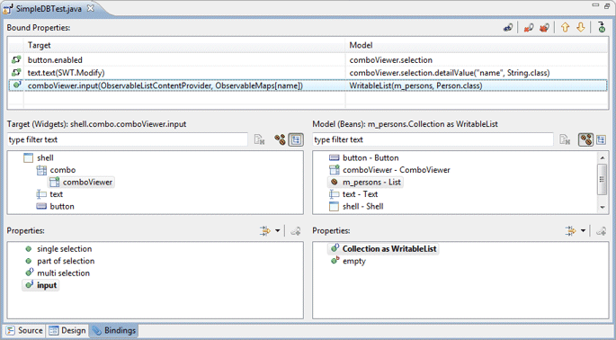
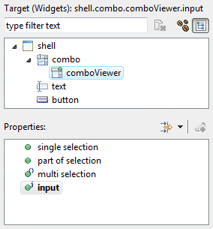
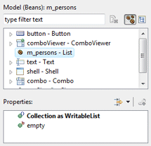
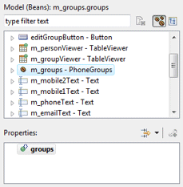
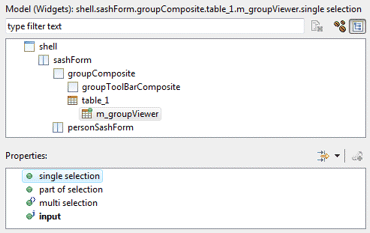
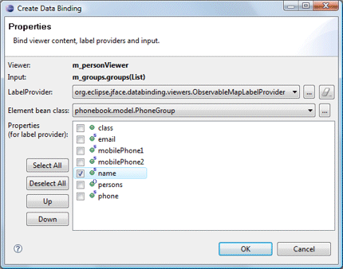
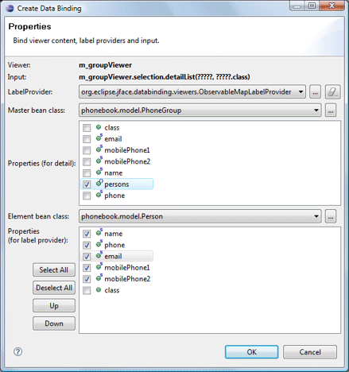
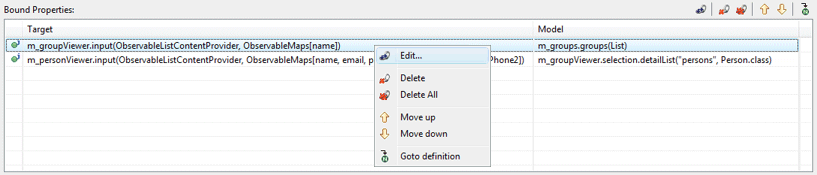
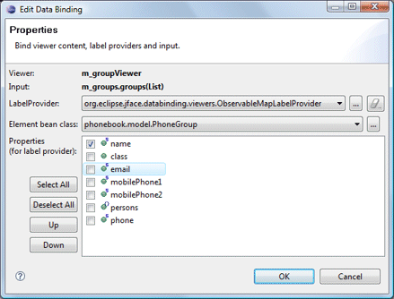
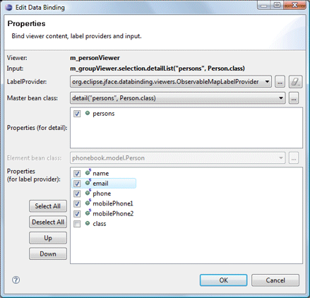

Click the Bindings tab in the editor to created and edit data bindings.

JFace Viewers can bind to a content provider, label provider and input object. The content provider (an ObservableListContentProvider or ObservableSetContentProvider) is calculated automatically based on the input. The label provider (and ObservableMapLabelProvider) is created based on the observed bean and its selected properties.
Any viewers defined in the current compilation unit are shown in the widget list. Several properties including the input can be selected in the properties list

Several types of inputs are supported:
 Collections: any field of the current compilation unit that is a
java.lang.List or java.lang.Set may be selected. The filter
field above the list can be used to filter the list of collections. The
Collections: any field of the current compilation unit that is a
java.lang.List or java.lang.Set may be selected. The filter
field above the list can be used to filter the list of collections. The
 clear button can be used to clear the filter and restore the full list.
clear button can be used to clear the filter and restore the full list.

Beans: any field of the current compilation unit may be selected.
The filter field above the list can be used to filter the list of beans.
The
 clear button can be used to clear the filter and restore the full list.
Beans are the primary data source for bindings (usually the
model). Any property of the Bean may be observed.
clear button can be used to clear the filter and restore the full list.
Beans are the primary data source for bindings (usually the
model). Any property of the Bean may be observed.

 Selection: any object (usually a JFace viewer) with a selection
property of type org.eclipse.jface.viewers.IStructuredSelection
may be selected. The filter field above the list can be used to filter
the list of selections. The
Selection: any object (usually a JFace viewer) with a selection
property of type org.eclipse.jface.viewers.IStructuredSelection
may be selected. The filter field above the list can be used to filter
the list of selections. The
 clear button can be used to clear the filter and restore the full list.
Typically, the selection of one viewer is bound to the input of another
viewer in a master-detail relationship. New with Eclipse 3.4: If
the selection target provide multiple selection or checked elements,
those are available as inputs as well.
clear button can be used to clear the filter and restore the full list.
Typically, the selection of one viewer is bound to the input of another
viewer in a master-detail relationship. New with Eclipse 3.4: If
the selection target provide multiple selection or checked elements,
those are available as inputs as well.

New bindings are created by selecting a Viewer, an
Input and clicking the
 Bind button. When creating a binding, the Content Provider and
Label Provider may be specified.
Bind button. When creating a binding, the Content Provider and
Label Provider may be specified.
 
For Eclipse 3.4 and above:
For TreeViewer inputs, the Input Bean Class, IObservableFactory, Tree Structure Advisor, Content Provider and Label Provider may be specified.

In order to simplify this, the tool can generate a number of pre-defined helper classes that implement most of the needed tree behavior.

At the top of the page, existing Bound Viewers are listed. The Content Provider and Input are listed for each viewer.

Clicking the Edit button or Edit menu opens the Edit Binding dialog where the providers may be modified.
 
The Delete button or Delete menu is used to delete the selected bound viewer while the Delete All button or Delete All menu is used to delete all of the bound viewers.
The Move Up and Move Down buttons and menus are used to change the order of the bindings while the Goto Definition button and menu are used to jump to the generated code for the binding.
As bindings are created or edited on the Bindings tab, the necessary data binding code is generated which may then be seen in the Source view. An initDataBindings() method is created, if it does not already exist and a call to that method is added to the end of the widget creation process.
Within the initDataBindings() method, any needed observables are created first followed by the creation of the Data Binding Context. Simple SWT data bindings are then created using the new context followed by any JFace content providers, list providers and inputs that are needed.

Warning: do not edit the initDataBinding() method by hand (without carefully matching the code generation pattern used by the tool) as it will be regenerated in its entirety any time the tool needs to add, remove or update a data binding.